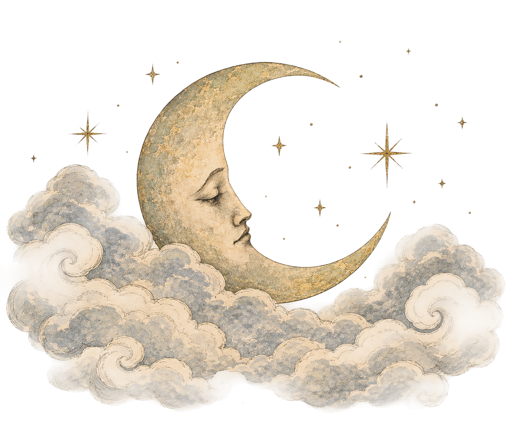
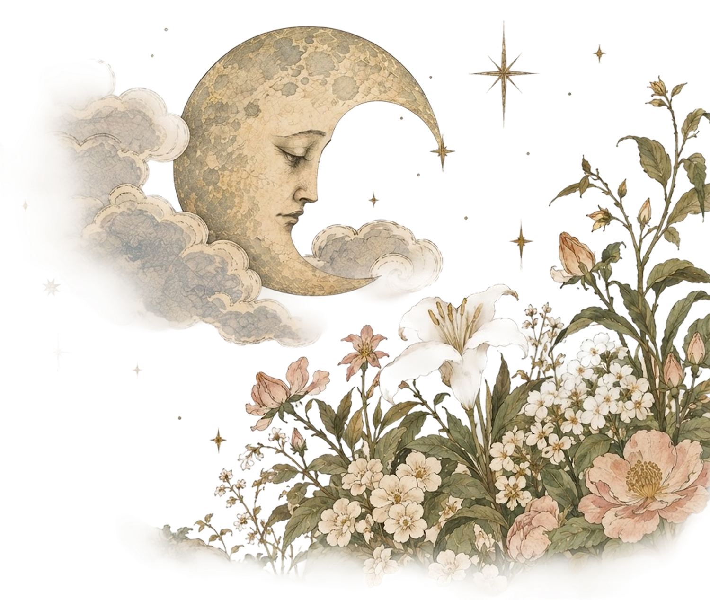
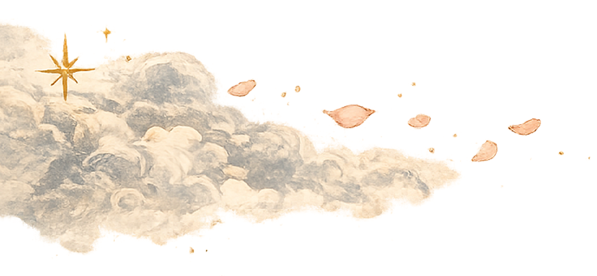
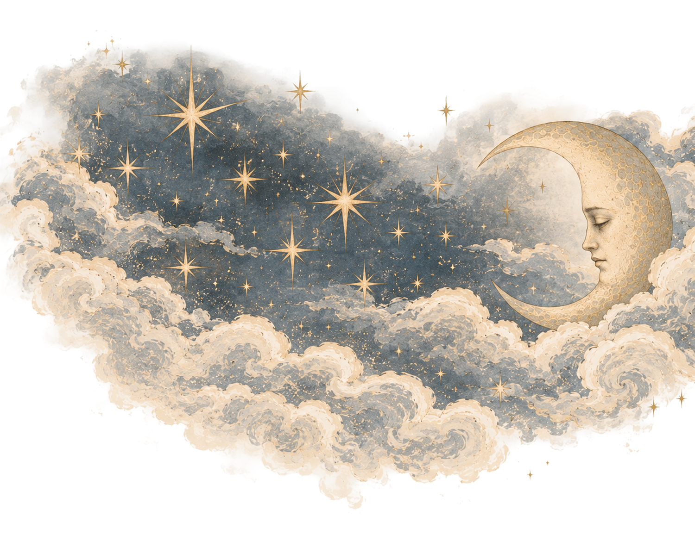
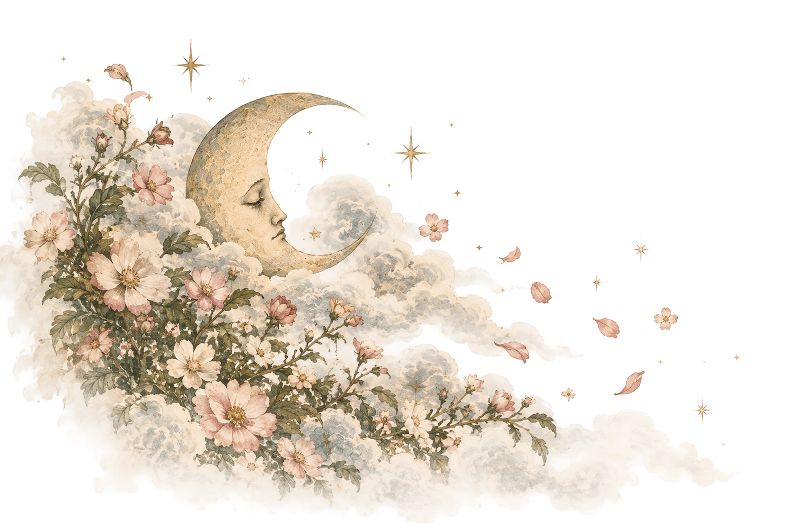
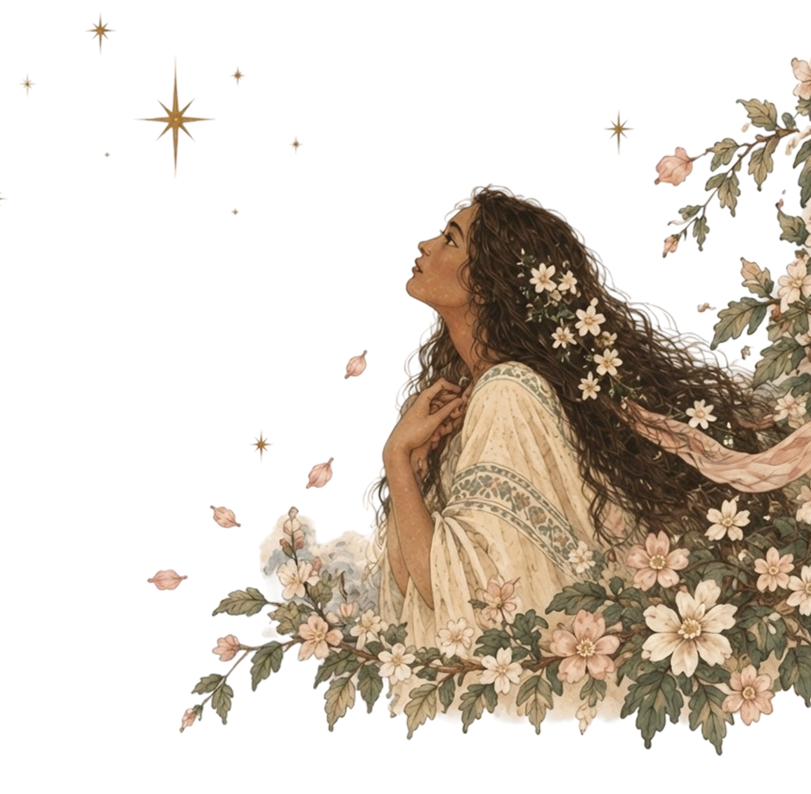
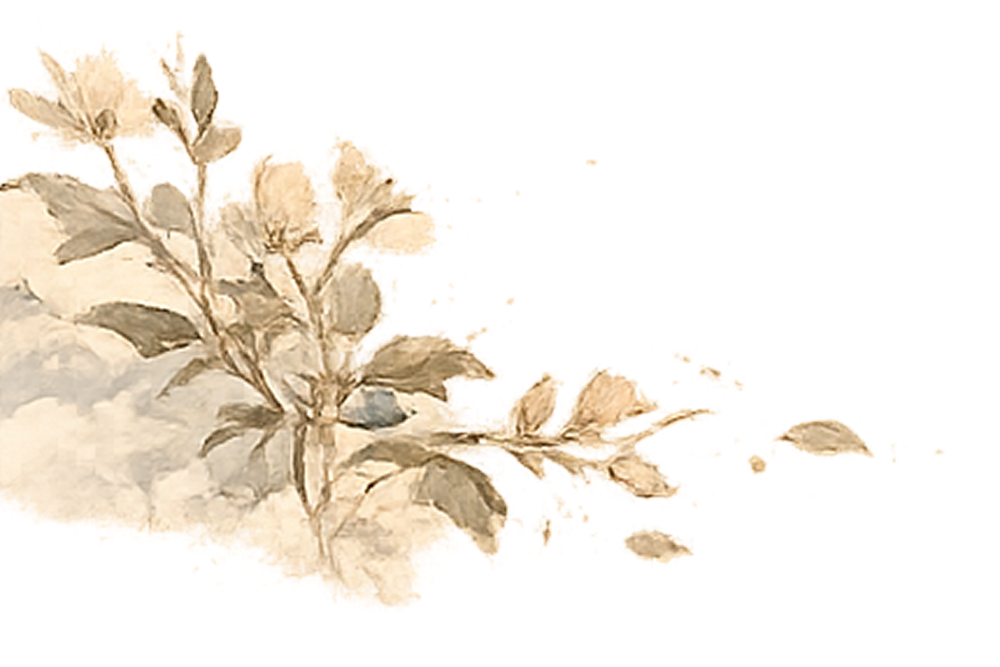
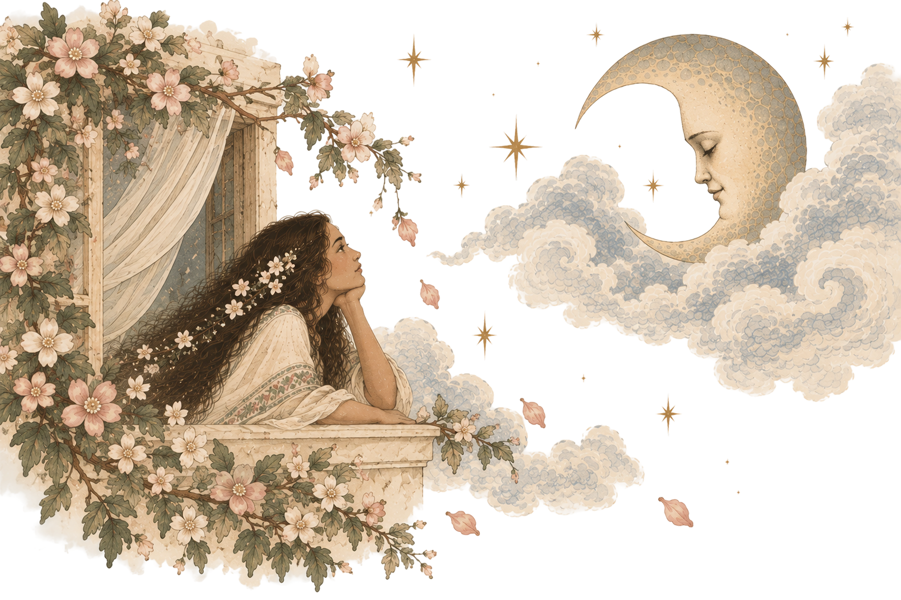
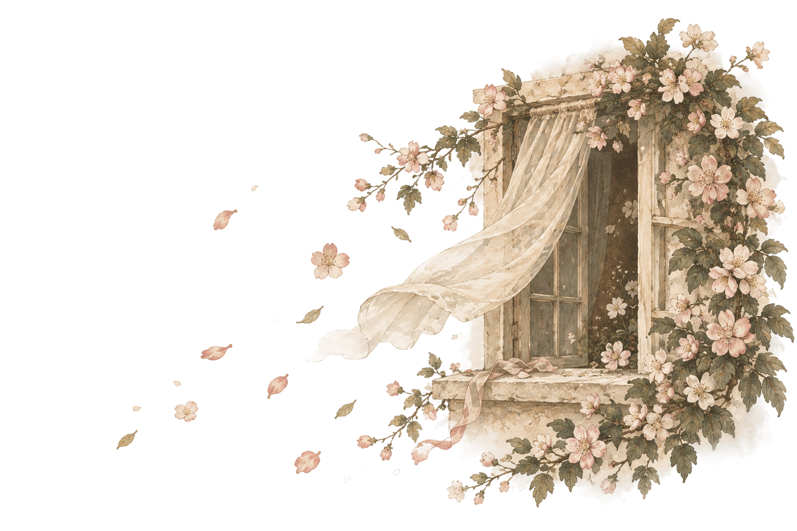
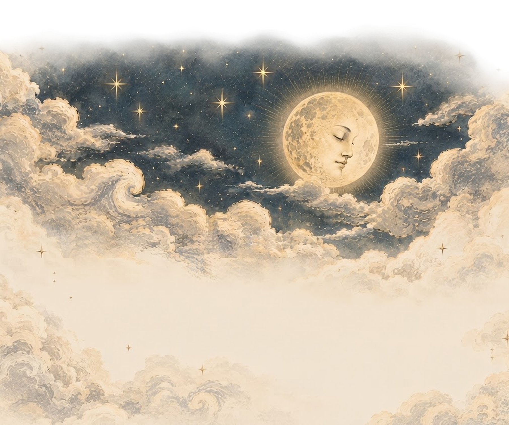

The Moon is very beautiful with his round, bright face which shines with soft and gentle light on all the world of man. But once there was a time when he was not so beautiful as he is now. Six thousand years ago the face of the Moon became changed in a single night. Before that time his face had been so dark and gloomy that no one liked to look at him, and for this reason he was always very sad.
One day he complained to the flowers and to the stars — for they were the only things that would ever look in his face.
He said,
“I do not like to be the Moon. I wish I were a star or a flower. If I were a star, even the smallest one, some great general would care for me; but alas! I am only the Moon and no one likes me. If I could only be a flower and grow in a garden where the beautiful earth women come, they would place me in their hair and praise my fragrance and beauty. Or, if I could even grow in the wilderness where no one could see, the birds would surely come and sing sweet songs for me. But I am only the Moon and no one honors me.”


The stars answered and said,
“We can not help you. We were born here and we can not leave our places. We never had any one to help us. We do our duty, we work all the day and twinkle in the dark night to make the skies more beautiful. — But that is all we can do,”
they added, as they smiled coldly at the sorrowful Moon.


Then the flowers smiled sweetly and said,
“We do not know how we can help you. We live always in one place—in a garden near the most beautiful maiden in all the world. As she is kind to every one in trouble we will tell her about you. We love her very much and she loves us. Her name is Tseh-N’io.”
Still the Moon was sad. So one evening he went to see the beautiful maiden Tseh-N’io. And when he saw her he loved her at once. He said,
“Your face is very beautiful. I wish that you would come to me, and that my face would be as your face. Your motions are gentle and full of grace. Come with me and we will be as one—and perfect. I know that even the worst people in all the world would have only to look at you and they would love you. Tell me, how did you come to be so beautiful?”


“I have always lived with those who were gentle and happy, and I believe that is the cause of beauty and goodness,”
answered Tseh-N’io.
And so the Moon went every night to see the maiden. He knocked on her window, and she came.
And when he saw how gentle and beautiful she was, his love grew stronger, and he wished more and more to be with her always.

One day Tseh-N’io said to her mother,
“I should like to go to the Moon and live always with him. Will you allow me to go?”
Her mother thought so little of the question that she made no reply, and Tseh-N’io told her friends that she was going to be the Moon’s bride.

In a few days she was gone. Her mother searched everywhere but could not find her. And one of Tseh-N’io’s friends said,
“She has gone with the Moon, for he asked her many times.”
A year and a year passed by and Tseh-N’io, the gentle and beautiful earth maiden, did not return.
Then the people said,
“She has gone forever. She is with the Moon.”

The face of the Moon is very beautiful now. It is happy and bright and gives a soft, gentle light to all the world. And there are those who say that the Moon is now like Tseh-N’io, who was once the most beautiful of all earth maidens.